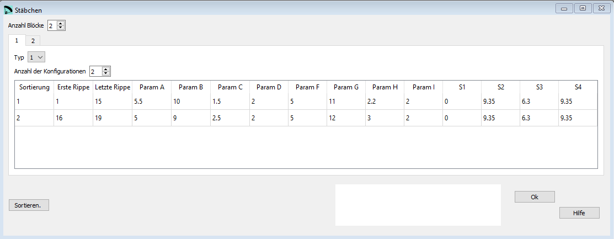

Stäbchen¶
Im Fenster Stäbchen werden die Taschen definiert welche im Anschluss die Verstärkungsstäbchen aufnehmen.
{kind=link}
Rohdaten:
*******************************************************
* 21. JONCS DEFINITION (NYLON RODS)
*******************************************************
2
2
1 1
2
1 1 15
5.5 10. 1.5 2.0
5. 11. 2.2 2.0
0.0 9.35 6.3 9.35
2 16 19
5. 9. 2.5 2.0
5. 12 3. 2.0
0.0 9.35 6.3 9.35
2 2
2
1 1 15
20. 2. 30. -2.0 3.0
0.0 9.35 6.3 9.35
2 16 20
40. 4. 30. -3.2 0.0
0.0 9.35 6.3 9.35
Anzahl Blöcke¶
Stäbchen ist eine optionale Konfiguration.
Wenn Du keine Stäbchen verwenden möchtest, dann setze den Wert von Anzahl Blöcke auf 0.
In einem Block können entweder Typ 1 oder Typ 2 Stäbchen definiert werden.
Innerhalb eines Blockes kannst Du mehrere Konfigurationen definiern welche jeweils ein Stäbchen (Tasche) abbildet.
Typ 1 Stäbchen¶
Typ 1 Stäbchen sind die typischen Stäbchen welche die Eintrittskante versteifen.

Typ 1 Stäbchen Definition¶
Erste Rippe |
Letzte Rippe |
Param A |
Param B |
Param C |
Param D |
Param F |
Param G |
Param H |
Param I |
S1 |
S2 |
S3 |
S4 |
Rippen Nr |
Rippen Nr |
xeini 1 |
xefin 1 |
ye 2 |
n 3 |
xicni 1 |
xifin 1 |
yi 2 |
n 3 |
S1 4 |
S2 4 |
S3 4 |
S4 4 |
Typ 2 Stäbchen¶
Typ 2 Stäbchen können beliebig auf den Rippen platziert werden.

Type 2 rods definition¶
Erste Rippe |
Letzte Rippe |
Param A |
Param B |
Param C |
Param D |
Param E |
S1 |
S2 |
S3 |
S4 |
Rippen Nr |
Rippen Nr |
x-start 1 |
y-start 2 |
x-end 1 |
y-end 2 |
deflection f [2] |
0 |
S2 4 |
S3 4 |
S4 4 |
Sortieren¶
Mit der Schaltfläche Sortieren können die Zeilen neu angeordnet werden. Wenn das gemacht werden soll kannst Du die neuen Nummern in der ersten Spalte einsetzten und anschliessend mit der Schaltfläche die Tabelle neu sortieren.
Eine detaillierte Beschreibung in englisch findest Du auf der Laboratori d'envol website.